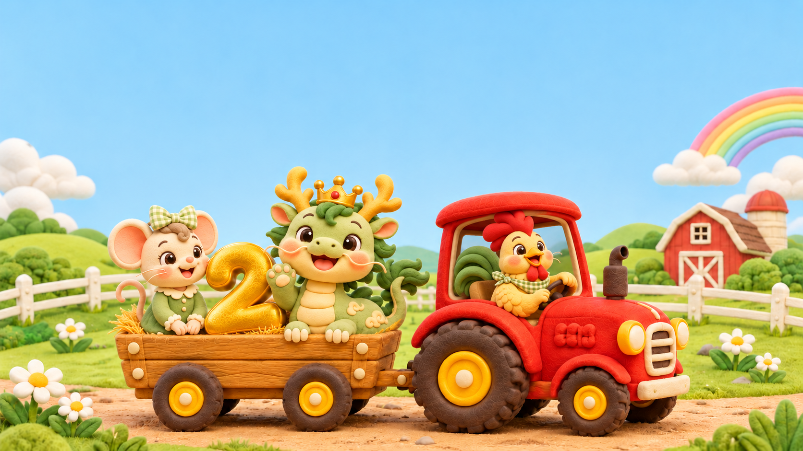
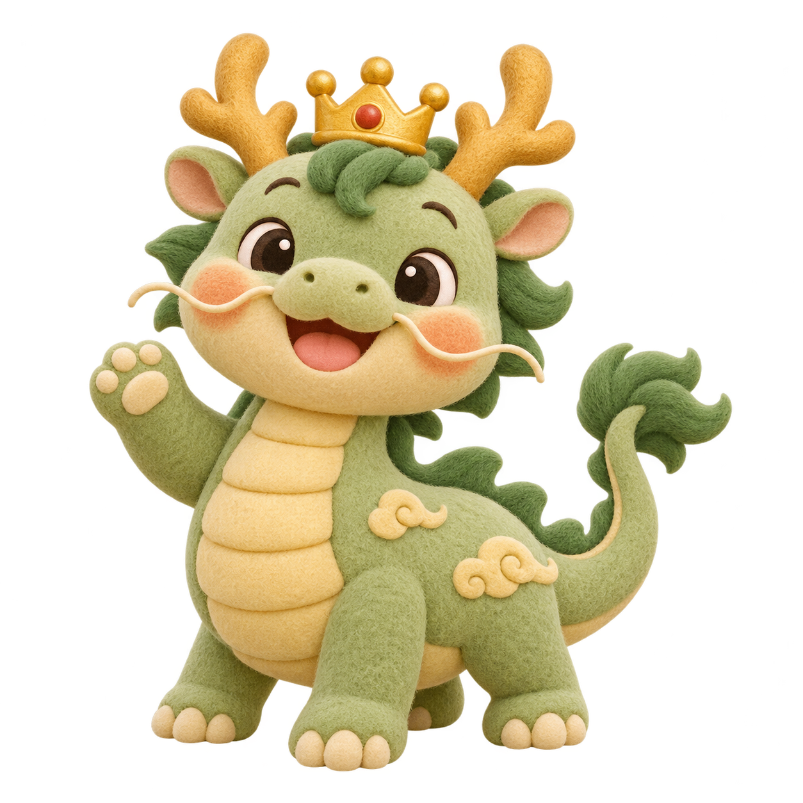
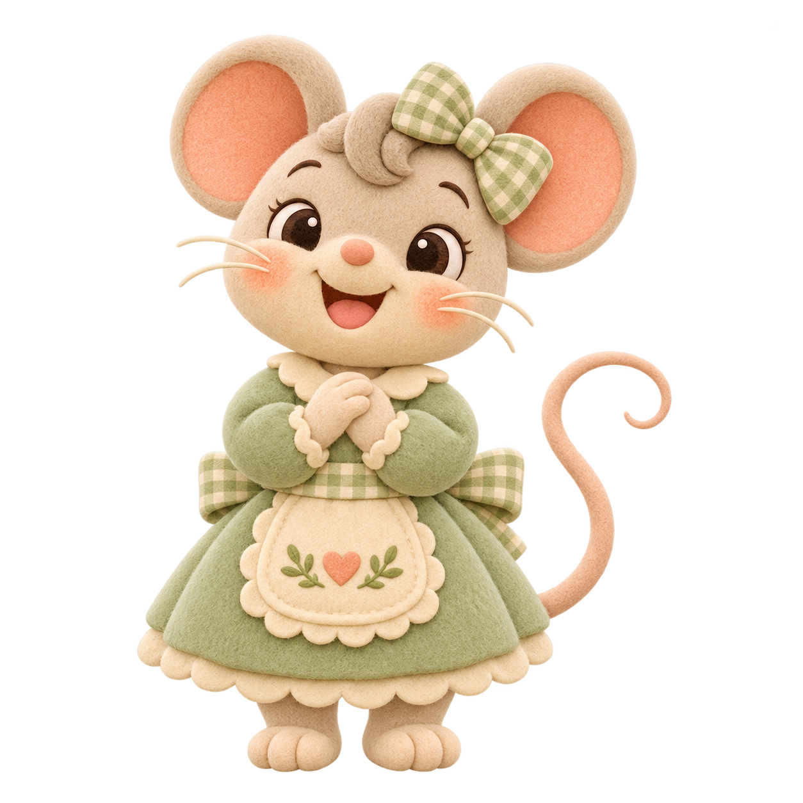
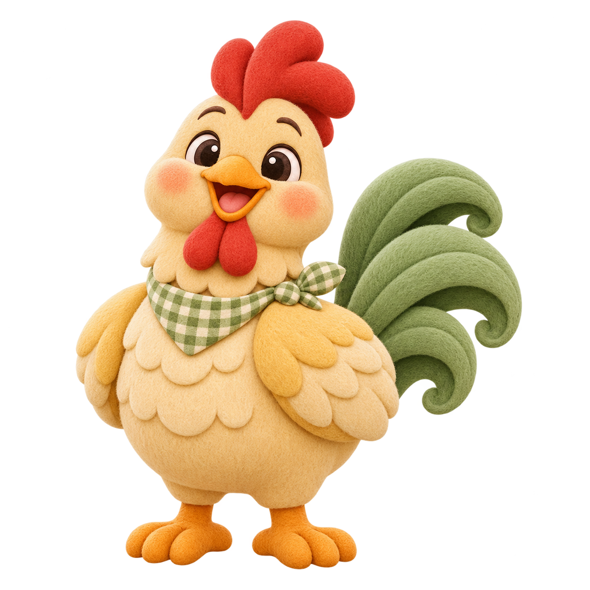
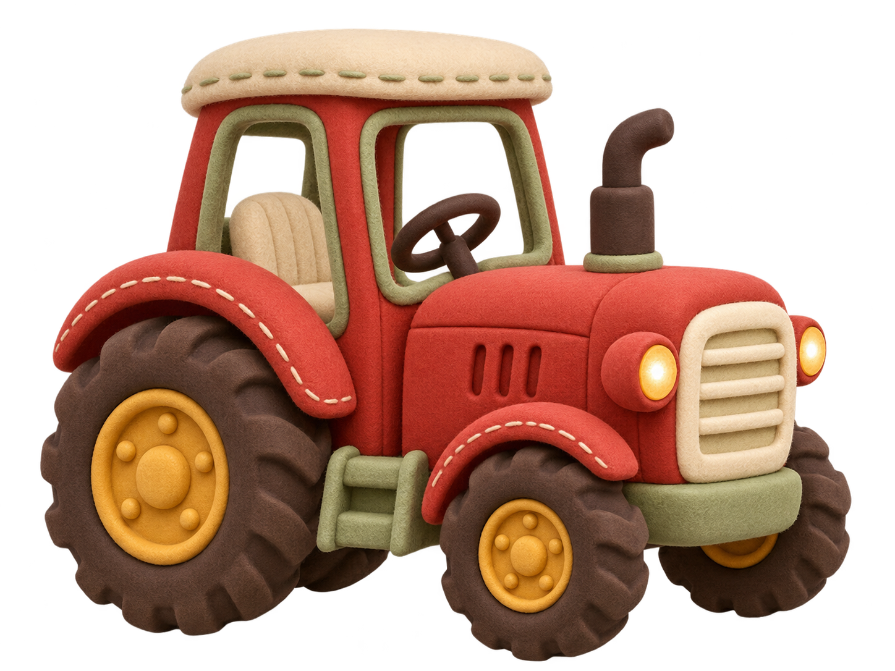

爸爸开车，妈妈陪伴，齐齐快乐长大。

选一些照片，一起看看齐齐的成长吧。
许一个小小的愿望吧
没有输赢，每一次发现都很棒



把手机横过来，和小龙一起出发可使用手机的屏幕镜像连接电视
隐藏后轻点空白处恢复操作；Esc 恢复，1–4 切换场景。照片只在本机展示，刷新或切换版本后需重选。声音默认关闭。
已选照片和音乐不会带到其他版本，回来后需要重选。全屏和常亮也可能需要重新开启。
启用 JavaScript 后可切换相册、蛋糕和小游戏。返回版本首页